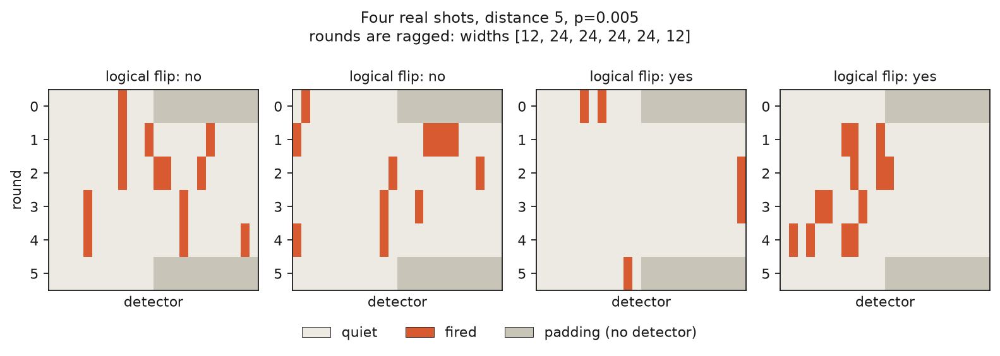

Applied AI scientist. Machine learning applied to quantum computing.
Post 1 of 3 on building neural decoders for the surface code. This one has no results in it. It is the background I wish I'd had before starting.
Most explanations of quantum error correction are written for physicists. This one is written for people who train models. If you know what a sequence classifier is and have never thought about a qubit, you are the intended reader.
A physical qubit fails roughly once every thousand operations. A useful quantum computer needs error rates closer to one in a thousand trillion. Nobody expects hardware to close twelve orders of magnitude, so the gap is closed differently: spread one logical qubit across many physical ones, measure them constantly, and correct errors faster than they accumulate. The measuring is done by hardware. The correcting is done by software, in real time, and that software is currently one of the things standing between the machines that exist and the machines people want.
That software is called a decoder. This post is about what it actually does.
Here is the constraint that makes everything else strange. Measuring a quantum state destroys it. So you cannot check whether your logical qubit is still correct, because checking is what breaks it.
The workaround is to measure something that reveals whether an error happened without revealing what the qubit is. In the surface code, you interleave your data qubits with extra qubits whose only job is to measure parity between neighbours. Those parity checks say "something flipped near here" while learning nothing about the encoded value.
Those parity measurements are called the syndrome, and the syndrome is all a decoder ever sees. It never observes the error itself. It observes a shadow and has to infer the object.
Strip the physics away and the shape is familiar.
Every cycle, a few dozen parity checks report a bit. You run many cycles. So a single
experiment produces a binary matrix of shape [rounds, checks], which is a multi-channel
binary time series. In the distance-5 code I've been working with, that's 24 channels over 26
time steps, so 600 bits per shot.
The label is one bit: did the logical qubit end up flipped or not.
That's it. Binary sequence classification on sparse binary channels.

Four actual shots. Rows are rounds, columns are parity checks, orange means the check fired. The grey blocks are padding: the first and last rounds genuinely have fewer checks than the middle ones, which is a detail that has bitten this project more than once. Two shots ended with the logical qubit intact and two did not, and the difference between those cases is not something you can read off by eye. That is the job.
Three properties make it unusually pleasant as a machine learning problem, and they are worth appreciating because most real problems have none of them.
The labels are exact. In simulation you know the true answer, because you generated the errors yourself. No annotation budget, no label noise, no two annotators disagreeing.
The data is free and effectively unlimited. Stabiliser circuits turn out to be classically
simulable in polynomial time, which is a genuinely surprising fact about quantum mechanics
and the reason this whole field can be studied without a quantum computer. The stim library
samples millions of shots per second on a laptop. There is no data scarcity here, only
compute.
And real hardware data exists as well. Google published the syndrome measurements from their 2023 surface code experiment under CC-BY, including their own decoders' predictions, so you can test against a real device without owning one.
Given free perfect labels, you might expect this to be easy. It isn't.
Start with the fact that the syndrome is ambiguous by construction. Many different error patterns produce exactly the same syndrome, so identifying the error is not merely hard, it is impossible. What a decoder actually does is pick a correction from the most likely equivalence class. Two errors differing by a harmless loop are identical as far as the logical qubit is concerned. Two differing by a chain that crosses the whole patch are opposite. Telling those apart is the entire game.
The measurements are also noisy themselves. A parity check can report a flip that never happened. That is why the syndrome is a time series rather than a snapshot: a real error persists across rounds, a measurement glitch does not, and the only way to distinguish them is to watch.
Then there is the assumption everyone makes and no device honours. The neat mental model has each qubit failing independently. Actual hardware has crosstalk between neighbours, leakage out of the computational subspace entirely, and error rates that vary by an order of magnitude across the chip and drift over hours. Hold onto this one, because the rest of this series is about it.
Finally, and this is the constraint that will feel familiar to anyone who has shipped a model under a latency budget: it has to run in microseconds. A slow decoder is not a slightly worse decoder. It is a useless one, because errors accumulate faster than it clears them.
The standard decoder is minimum-weight perfect matching, and it deserves respect before anyone tries to beat it.
The idea is elegant. Build a graph where each node is a parity check that fired and each edge is an error mechanism that could explain a pair of them. Then find the lowest-weight set of edges that accounts for every firing. That's a well-studied combinatorial problem with fast exact algorithms, and under the assumption that errors are independent it is close to optimal.
Not "a reasonable heuristic". Close to optimal. Here is what that means concretely, from my own runs on simulated distance-5 data:
| Physical error rate | Do nothing | Matching | Matching's advantage |
|---|---|---|---|
| 0.001 | 0.0571 | 0.00016 | 357x |
| 0.003 | 0.1541 | 0.00338 | 46x |
| 0.010 | 0.3549 | 0.08352 | 4.2x |
Any claim that a neural network "beats the classical decoder" should be read against that table. The bar is not doing better than nothing. The bar is a 357x reduction.
There is a check that any decoder has to pass, and it is a good one to know about because it catches broken implementations immediately.
Below a certain physical error rate, called the threshold, making the code bigger should make the logical error rate smaller. Above it, making the code bigger makes things worse, because you have added more places for things to go wrong than you have added protection.
So a correct decoder shows a crossover. Mine does:
| Physical error rate | Distance 3 | Distance 5 | Verdict |
|---|---|---|---|
| 0.001 | 0.00067 | 0.00016 | bigger is better |
| 0.005 | 0.01632 | 0.01374 | bigger is better |
| 0.010 | 0.05785 | 0.08352 | bigger is worse |
The threshold sits between 0.005 and 0.01, which is where the literature puts it for this noise model. I ran that before writing a single line of model code, because a decoder study built on a baseline that does not reproduce known behaviour is worthless no matter what the model does afterwards.
Because matching's strength is also exactly where it breaks.
Matching is near-optimal given a correct noise model. It needs to know the probability of each error mechanism to weight the graph edges, and it assumes those mechanisms are independent. On a real device you have neither. Your calibration is approximate and stale, and crosstalk means errors genuinely are correlated.
A learned decoder never gets told a noise model. It sees syndromes and outcomes and picks up whatever structure is actually there, including the correlations matching cannot express.
That is the entire bet, and it is testable rather than rhetorical: if the mechanism is real, then the gap between learned and matching decoders should widen as the noise departs from what matching assumes, holding the total amount of noise fixed. If it does not widen, the story is wrong.
Measuring that is post 2.
Code, including the validation gates and the numbers above: github.com/Bauxitiego/qec-neural-decoder. Everything is classically simulated and reproducible on a laptop.